01はじめに
ChatGPTに文章を書いてもらったり、アイデアを出してもらったりしている。
それなのに、仕事は思ったほど減っていない。
そんな感覚はないでしょうか。
その理由は、ChatGPTから「答え」を受け取ったあと、資料への転記、 数字の集計、グラフ作成、レイアウト調整、ファイル保存といった作業を、 結局は自分で行っているからかもしれません。
2026年7月に登場したChatGPT Workは、 質問に答えるだけでなく、調査や分析を進め、文書・表計算・プレゼンテーション・レポ ート・Webサイトなどの完成品を作るための新しい選択肢です。
本書は、AIやプログラミングに詳しくない40〜50代のビジネスパーソンを主な読者 として想定しています。
難しい専門用語ではなく、実際の仕事をどう頼み、どこを確認し、 どう直してもらうのかを、マンガと実例で説明します。
本書の読み方
- 各章の冒頭にマンガを掲載し、その章で学ぶ変化を先にイメージします。
- マンガの後に、機能と考え方を本文で詳しく解説します。
- 実践例とコピー用の指示文を使い、自分の仕事で試します。
- 最後にチェックリストとワークで、理解を行動へ変えます。
※本書の機能・提供状況は、特に記載がない限り2026年7月18日時点の公式情報を 基準としています。
ChatGPT Workは段階的に提供されており、プラン、地域、端末、 組織の設定によって表示や対応機能が異なる場合があります。
02第1章 ChatGPT Workで、何が変わったのか？
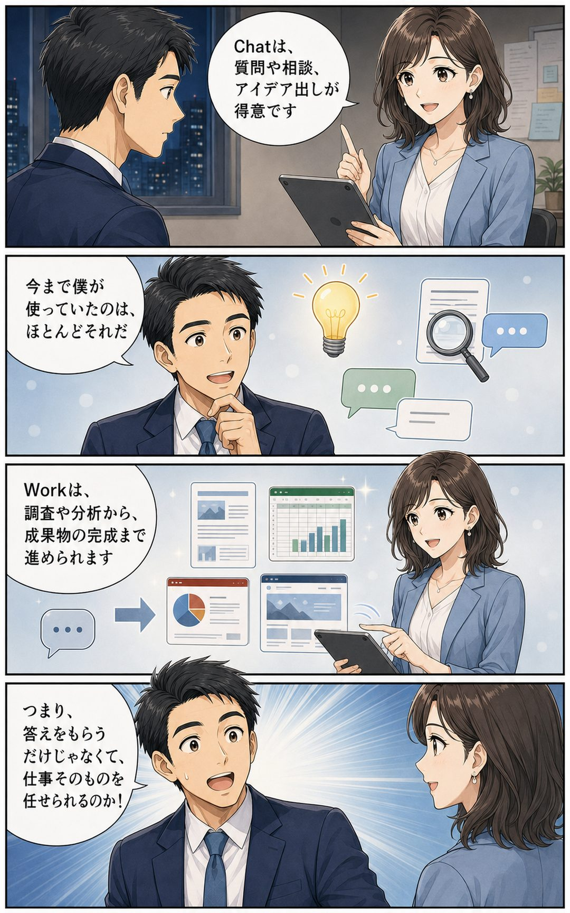
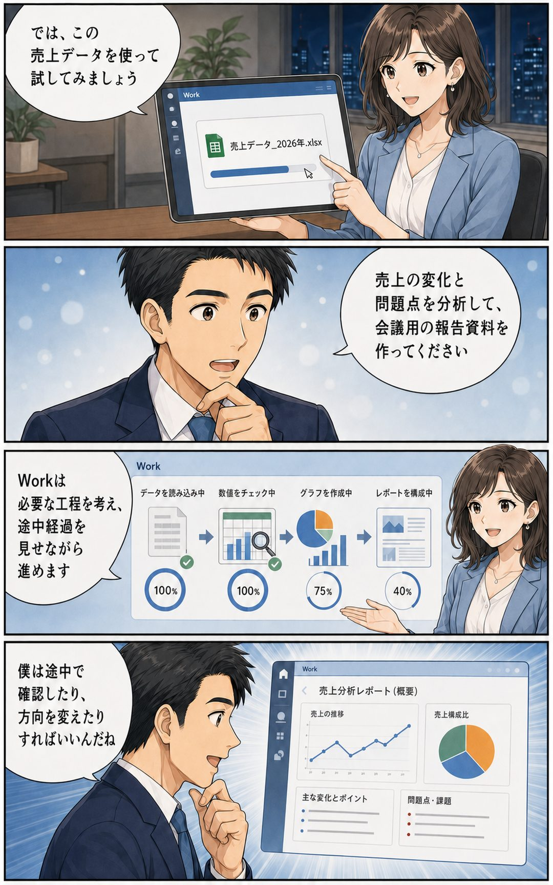
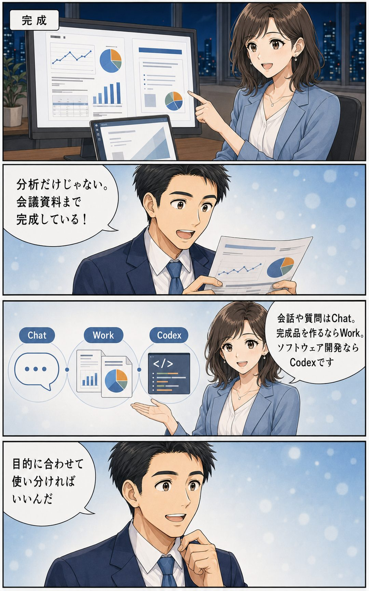
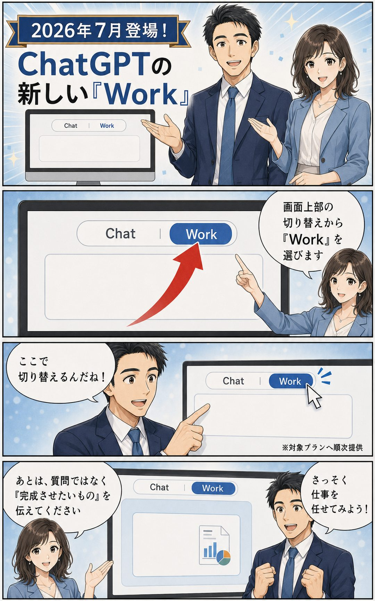
1 ChatGPTを使っても、仕事が減らない理由
マンガの主人公は、ChatGPTに会議資料の構成案を作ってもらっていました。
しかし、その後は自分でWordへ文章を移し、Excelの数字を確認し、 グラフを作り、プレゼンテーションへ整えていました。
ChatGPTを使っていること自体は間違いではありません。
構成案や文章を短時間で用意できるだけでも、大きな効率化です。
ただし、AIへ任せているのが仕事の一部分だけなら、 残りの工程は人間に残ります。
従来の使い方では、人間が作業全体を管理し、その途中にChatGPTを置いていました。
Workでは、最初に目的、資料、完成形式、守るべき条件を伝え、 複数の工程を進めてもらいます。
人間は途中で質問に答え、方向を調整し、完成品を確認します。
2 2026年7月に登場したChatGPT Work
OpenAIは2026年7月9日、ChatGPT Workを発表しました。
公式には、長く複雑な仕事に取り組み、接続されたアプリやファイルを使い、 文書、表計算、プレゼンテーション、レポート、 Sitesなどの完成品を作るエージェントとして説明されています。
Workは、依頼を受けてから必要な情報を集め、作業をいくつかの工程に分け、 途中経過を示しながら進みます。
利用者は進行中に質問へ答えたり、方向を変えたり、 重要な操作を承認したりできます。
- 調査して終わるのではなく、調査結果を報告書へまとめる。
- 売上データを集計して終わるのではなく、分析とグラフを含む会議資料へ仕上げる。
- アイデアを出して終わるのではなく、Webサイトや簡単な業務ツールの試作品を作る。
- 一度限りの作業だけでなく、定期実行や変化の監視につなげる。
3 Chat・Work・Codexの違い
3つは優劣ではなく、目的によって使い分けます。
すぐに答えが欲しいならChat、複数工程を含む完成品が必要ならWork、 ソフトウェア開発が中心ならCodexというのが基本です。
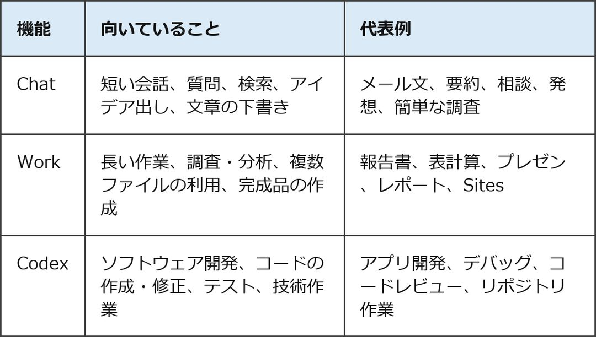
迷ったときの判断
- 数分で終わる質問や相談ならChat。
- 複数の資料や工程があり、完成ファイルが欲しいならWork。
- プログラムや開発環境そのものを扱うならCodex。
- 途中で目的が変わった場合は、別モードに切り替えてやり直してもよい。
4 Workでは、何を作れるのか？
Workの価値は、単に長文を書けることではありません。
手元の資料や接続されたサービスの情報を使い、 目的に合わせて成果物へまとめられる点にあります。
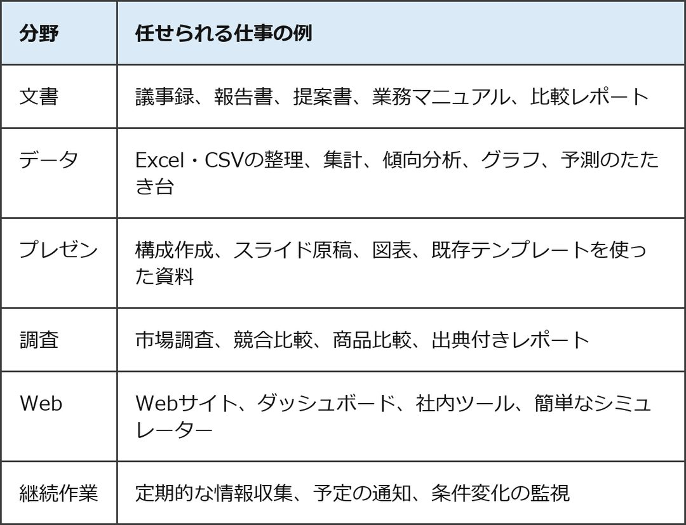
ただし、利用できる形式や操作は、プラン、端末、接続しているアプリ、 会社の管理者設定などによって異なります。
メニューに表示されていても、すべての利用者が同じ操作をできるとは限りません。
5 ChatからWorkへ切り替える
マンガでは、画面上部にある「Chat／Work」の切り替えを示しました。
実際の表示位置や名称は、Web、スマートフォン、 デスクトップアプリの更新によって変わる可能性があります。
Web版・スマートフォン版
- ChatGPTを開きます。
- 画面上部のモード選択から「Work」を選びます。
- 新しい会話を始めるか、既存のプロジェクトを開きます。
- 使用する資料を追加し、完成させたいものを伝えます。
デスクトップ版
- 新しいChatGPTデスクトップアプリを開きます。
- 左上でChatGPTを選び、画面上部の切り替えからWorkを選びます。
- 必要に応じてプロジェクトやローカルフォルダーを開きます。
- Workに必要なファイルだけを許可し、仕事を依頼します。
6 Workへ仕事を任せる基本の流れ
- 完成させたいものを決める。
- 目的と利用者を伝える。
- 必要な資料やデータを渡す。
- 完成形式と変更してはいけない条件を伝える。
- 途中で質問へ答え、必要なら方向を修正する。
- 完成品の数字、固有名詞、出典、レイアウトを確認する。
マンガでは、「売上の変化と問題点を分析して、 会議用の報告資料を作ってください」と依頼しました。
この文章には、材料、分析内容、完成品が含まれています。
7 まず任せたい5つの仕事
① 会議メモから議事録を作る
会議メモや文字起こしを渡し、決定事項、担当者、期限、 未解決事項を整理した議事録にします。
② 売上データから月次報告を作る
ExcelやCSVを渡し、前月・前年との比較、変化の大きい項目、問題点、 次月の確認事項をまとめます。
③ 過去の提案書を新しい顧客向けに作り直す
参考にする提案書と新しい顧客情報を渡し、構成やブランドを保ちながら内容を変更します。
④ 複数の資料から比較レポートを作る
商品資料やPDFを渡し、価格、機能、対象者、注意点など、 同じ条件で比較します。
⑤ 簡単なWebサイトや業務ツールを試作する
目的、利用者、必要な入力項目や表示内容を伝え、 まず試作品を作って動きを確認します。
8 そのまま使える最初の指示文
売上分析の指示例
9 Workに任せる前の確認
- 渡す資料に、不要な個人情報や顧客情報が含まれていないか。
- その資料をAIへ提供する権限があるか。
- 完成品を誰が使い、どこまで公開するのか。
- 数字、固有名詞、日付、出典を誰が確認するのか。
- 送信、公開、削除など、取り消しにくい操作が含まれていないか。
- 税務、法務、医療、投資など、専門家の確認が必要な判断ではないか。
Workは強力ですが、最終責任までAIへ移るわけではありません。
AIへ作業を任せ、人間が確認と判断を担うことが基本です。
10 第1章のまとめ
- Chatは質問、相談、検索、アイデア出しなど、短い会話に向いている。
- Workは調査・分析・複数工程を進め、完成品を作る仕事に向いている。
- Codexはソフトウェア開発や技術作業に向いている。
- Workでは、目的、材料、完成形式、守る条件、確認基準を伝える。
- AIに作業を任せても、数字・出典・公開範囲の最終確認は人間が行う。
実践ワーク｜自分の仕事を分けてみよう
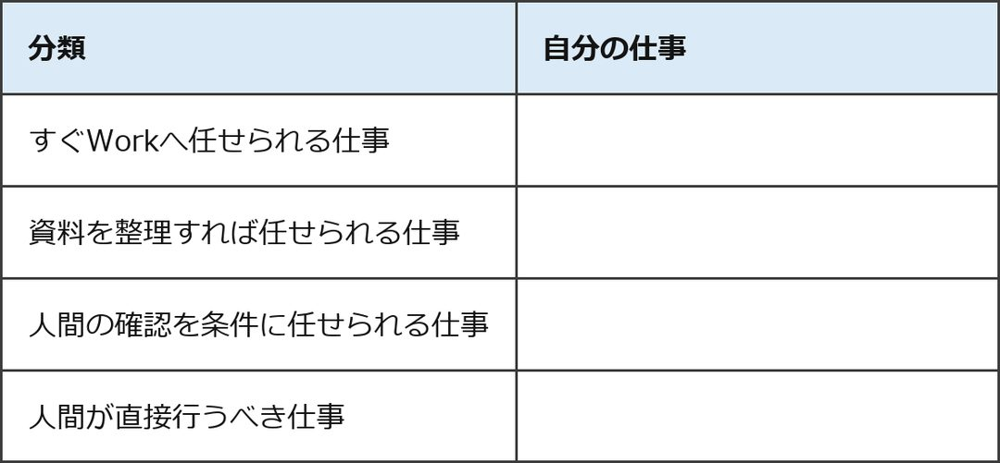
第1章の主な公式情報源
- ChatGPT Work and Codex https://help.openai.com/en/articles/200012 75-chatgpt-work-and-codex
- ChatGPT Release Notes（2026年7月9日） https://help.openai.com/en/articles/682545 3-chatgpt-release-notes
- Creating and editing documents, spreadsheets, and presentations with ChatGPT Work https://help.openai.com/en/articles/200012 78-creating-and-editing-documents-spreadsh eets-and-presentations-with-chatgpt-work
- Creating and managing ChatGPT Sites https://help.openai.com/en/articles/200013 39-creating-and-managing-chatgpt-sites
※本書はOpenAIの公式出版物ではありません。
ChatGPT、Work、Codexなどの名称・機能・提供条件は変更される場合が あります。
利用時には公式情報と実際の画面をご確認ください。
03第2章 まずはWorkを使ってみよう
マンガから学ぶ、この章のテーマ
主人公は初めてWorkを開き、月次報告書を作ろうとします。
ところが、「いい感じに作って」とだけ頼んだため、 期待と違う結果になりました。
案内役は、Workは一度の命令で完璧な答えを出す機械ではなく、 完成まで一緒に進める仕事のパートナーだと説明します。
Workを始める前の確認
Workは対象となる有料プランへ段階的に提供されています。
表示されない場合は、契約プラン、利用中のワークスペース、アプリの更新、 会社の管理者設定を確認します。
Web版とスマートフォン版のWorkはクラウド上で動きます。
デスクトップ版では、許可したローカルファイルや対応するデスクトップアプリを扱える場合があります。
会社で利用する場合は、自分の判断だけで接続サービスや機密資料を使わず、 社内ルールも確認します。
最初の仕事は小さくする
初回から大規模な事業計画や重要な顧客資料を任せる必要はありません。
まずは、会議メモの整理、既存文章の修正、簡単な集計など、 結果を自分で確認しやすい仕事を選びます。
小さな仕事で、ファイルの渡し方、途中の質問、修正の伝え方、 完成品の保存方法を覚えます。
途中で会話してよい
Workが作業中に質問してきたら、分かる範囲で答えます。
質問の意味が分からなければ、なぜ必要なのかを説明してもらえます。
方向が違うと感じたら、完成まで待つ必要はありません。
「対象者を経営者に変更してください」「数字の説明を増やしてください」 のように途中で修正できます。
完成品を確認する
完成したら、内容、数字、固有名詞、出典、ファイル形式、 レイアウトを確認します。
最初の成果物は完成ではなく、確認と修正を始めるためのたたき台と考えると使いやすくなります。
そのまま使える指示文
実践チェック
- Workが表示される環境か確認した
- 結果を自分で確認できる小さな仕事を選んだ
- 途中の質問へ答えた
- 完成品を確認して1回以上修正した
第2章のまとめ
この章の実践ワーク
この章で学んだ内容を使い、自分の仕事から一つ選んでWorkへ依頼してください。完成後に、最初の指示、Workからの質問、修正内容、完成品、削減できた時間を記録しましょう。
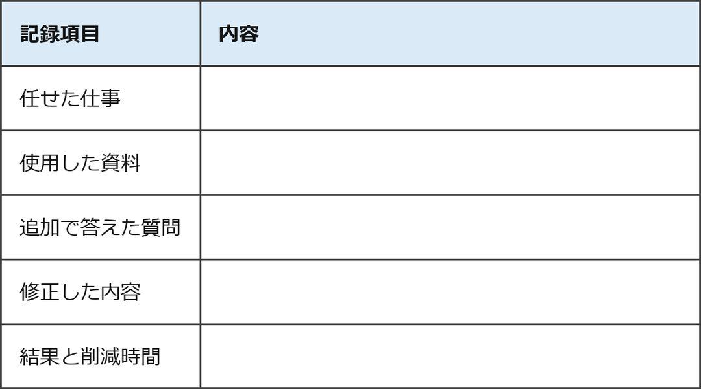
04第3章 Workへの頼み方には「型」がある
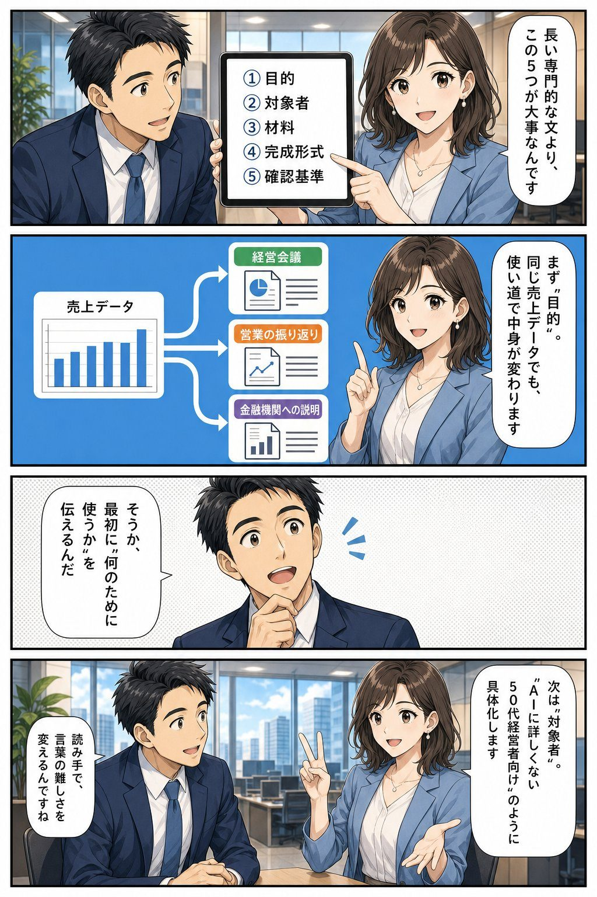
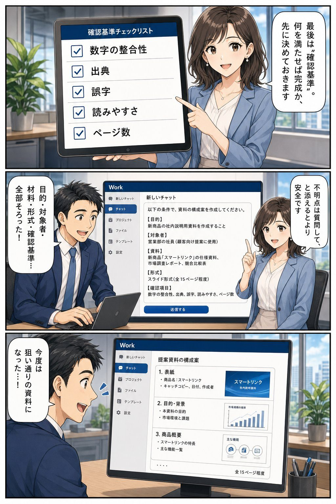
マンガから学ぶ、この章のテーマ
主人公は「会議資料を作って」と頼みますが、用途も読み手も分からない一般的な資料ができてしまいます。
案内役は、長く難しいプロンプトよりも、目的、対象者、材料、完成形式、 確認基準の5つが重要だと教えます。
目的を伝える
同じ売上データでも、経営会議、営業担当者の振り返り、金融機関への説明では、 必要な内容が変わります。
最初に「何のために使うか」を伝えます。
対象者を伝える
読み手の知識、役職、関心によって、言葉の難しさや説明量を変える必要があります。
「AIに詳しくない50代経営者向け」のように具体化します。
材料を指定する
添付した資料のうち、どれを事実の根拠として使うかを伝えます。
参考資料と、必ず守る基準資料を区別します。
完成形式と守る条件
Word、Excel、プレゼン、PDF、Webサイトなど、 必要な形式を指定します。
会社名、数式、ブランドカラー、ページ順など、 変更してはいけないものも伝えます。
確認基準を決める
数字の整合性、出典、誤字、読みやすさ、ページ数など、 完成と判断する条件を先に示します。
そのまま使える指示文
実践チェック
- 目的を一文で書いた
- 対象者を具体的にした
- 使用資料を指定した
- 完成形式を指定した
- 変更禁止事項と確認基準を伝えた
第3章のまとめ
この章の実践ワーク
この章で学んだ内容を使い、自分の仕事から一つ選んでWorkへ依頼してください。完成後に、最初の指示、Workからの質問、修正内容、完成品、削減できた時間を記録しましょう。
05第4章 手元の資料を渡して、文書を完成させる
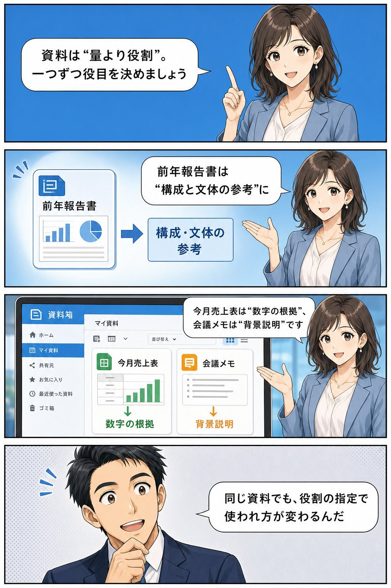
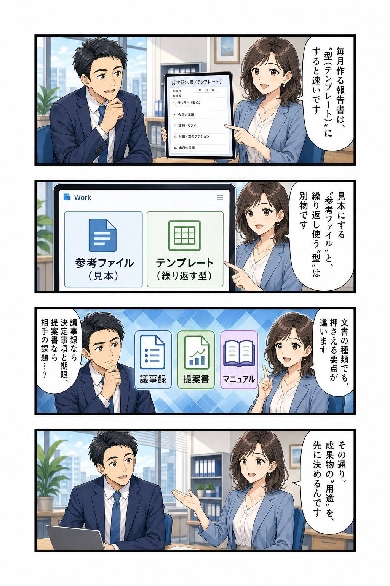
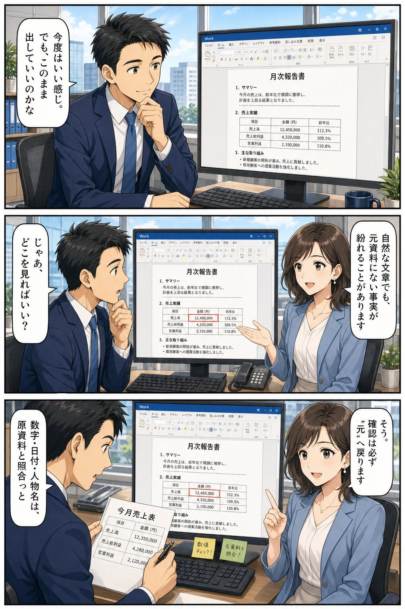
マンガから学ぶ、この章のテーマ
主人公は会議メモ、前年の報告書、今月の売上資料を渡し、 月次報告書を作ります。
案内役は、資料を多く渡すだけではなく、それぞれの役割を説明することが大切だと伝えます。
資料ごとの役割を決める
前年の報告書は構成と文体の参考、今月の売上表は数字の根拠、 会議メモは背景情報というように役割を指定します。
参考ファイルとテンプレート
参考ファイルは今回の仕事で見本にする資料です。
テンプレートは、同じ形式の成果物を繰り返し作るための型です。
毎月の報告書などはテンプレート化すると効率が上がります。
文書の種類に合わせる
議事録では決定事項と期限、提案書では相手の課題と提案価値、 マニュアルでは手順と注意点が重要です。
成果物の用途を明確にします。
確認は原資料へ戻る
AIが自然な文章に整えても、元資料にない事実を補っている可能性があります。
数字、日付、人物名、契約条件は原資料と照合します。
そのまま使える指示文
実践チェック
- 各資料の役割を説明した
- 変更禁止部分を指定した
- 元資料にない内容が加わっていないか確認した
- 数字・日付・固有名詞を照合した
第4章のまとめ
この章の実践ワーク
この章で学んだ内容を使い、自分の仕事から一つ選んでWorkへ依頼してください。完成後に、最初の指示、Workからの質問、修正内容、完成品、削減できた時間を記録しましょう。
06第5章 Excelの数字を、経営判断に使える情報へ変える
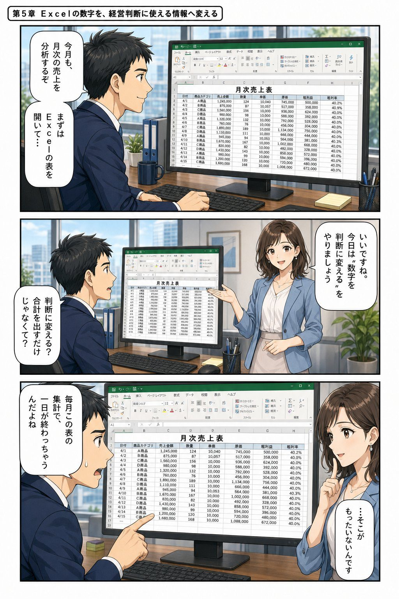
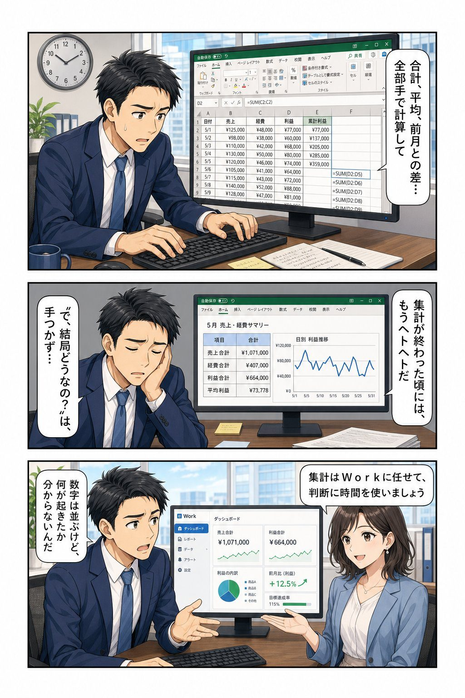
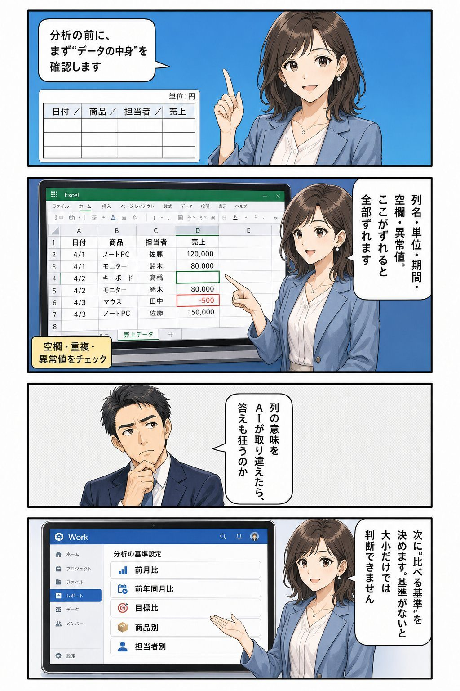
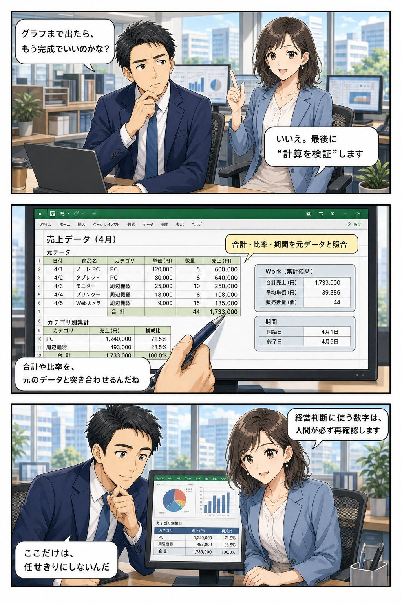
マンガから学ぶ、この章のテーマ
主人公は毎月の売上表を開いていますが、数字の集計だけで時間がなくなります。
Workへ表を渡し、「何が起きたか」「なぜ確認が必要か」「次に何を見るか」 まで整理します。
分析前にデータを確認する
列名、単位、期間、空欄、重複、異常値を確認します。
AIが列の意味を誤解すると、その後の分析もずれます。
比較の基準を決める
前月比、前年同月比、目標比、商品別、担当者別など、見る基準を指定します。
比較基準がなければ、数字の大小だけでは判断できません。
事実と推測を分ける
売上が減ったことはデータから分かる事実です。
減少理由は、別の情報がなければ推測です。
Workには事実、仮説、追加確認事項を分けてもらいます。
グラフは目的に合わせる
推移は折れ線、項目比較は棒、構成比は円などが基本ですが、 伝えたい内容によって選びます。
見栄えより、判断しやすさを優先します。
計算を検証する
合計値、比率、抽出条件、期間を元データと照合します。
重要な経営判断へ使う数字は、人間が必ず再確認します。
そのまま使える指示文
実践チェック
- 列名と単位を確認した
- 比較基準を指定した
- 事実と推測を分けた
- 合計と比率を再確認した
- グラフが判断に役立つか確認した
第5章のまとめ
この章の実践ワーク
この章で学んだ内容を使い、自分の仕事から一つ選んでWorkへ依頼してください。完成後に、最初の指示、Workからの質問、修正内容、完成品、削減できた時間を記録しましょう。
07第6章 プレゼン資料を完成させる
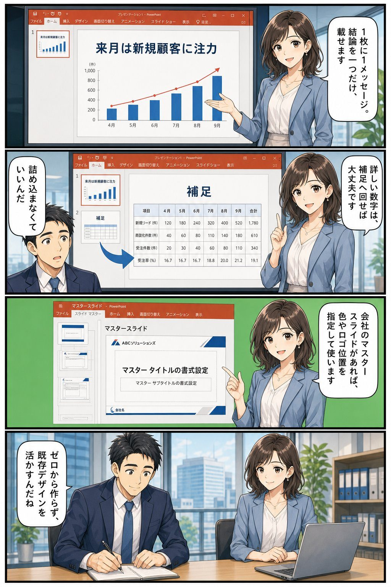
マンガから学ぶ、この章のテーマ
主人公は売上分析を経営会議で説明することになりました。
Workへ数字を並べてもらうだけではなく、会議参加者が何を理解し、 何を決める資料なのかを伝えます。
資料の目的を一つに絞る
報告、提案、承認、研修では構成が違います。
「現状を共有し、来月の施策を決める」のように目的を一文にします。
1枚1メッセージ
一枚へ情報を詰め込みすぎず、そのスライドで伝える結論を一つにします。
詳細データは補足へ回します。
既存デザインを使う
会社のマスタースライドや過去資料があれば、残すレイアウト、色、ロゴ位置、 フォント、ページ順を明示します。
内容と見た目を別々に確認する
最初に構成と主張を確認し、その後に図表、文字量、余白、 色を確認すると修正しやすくなります。
利用環境による違い
プレゼンテーションの作成・編集方法は、プラン、接続サービス、Web版、 デスクトップ版などによって異なります。
実際に利用できる形式を確認します。
そのまま使える指示文
実践チェック
- 会議で決めたいことを明確にした
- 1枚1メッセージになっている
- 元データと数字を照合した
- 文字が小さすぎない
- 説明用と配布用の違いを確認した
第6章のまとめ
この章の実践ワーク
この章で学んだ内容を使い、自分の仕事から一つ選んでWorkへ依頼してください。完成後に、最初の指示、Workからの質問、修正内容、完成品、削減できた時間を記録しましょう。
08第7章 調査から報告書までを一気に任せる
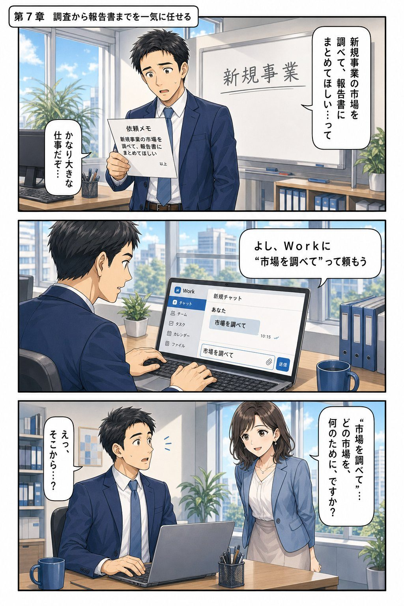
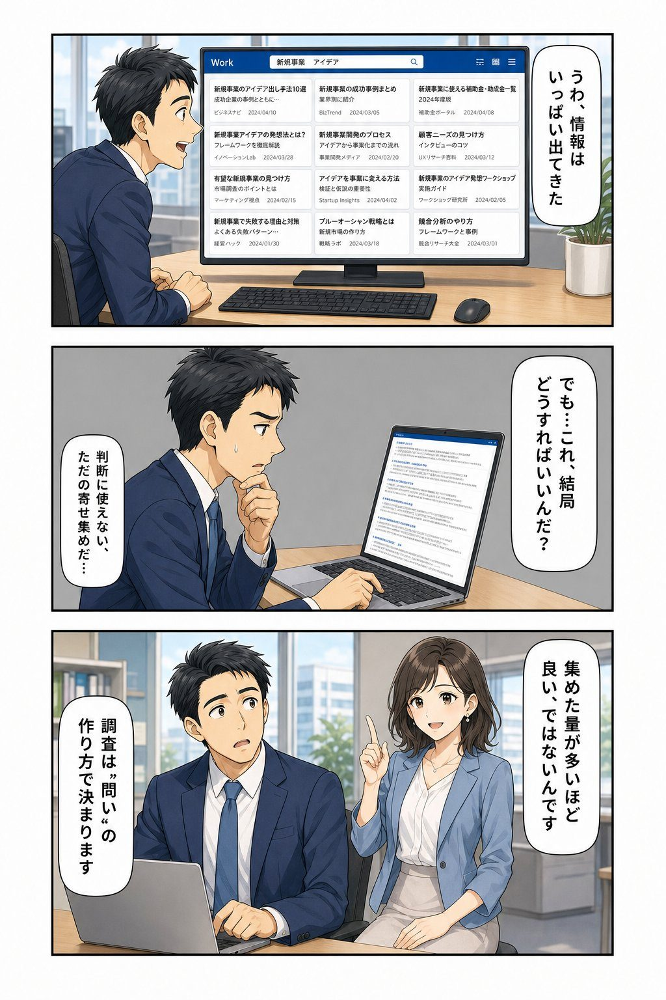
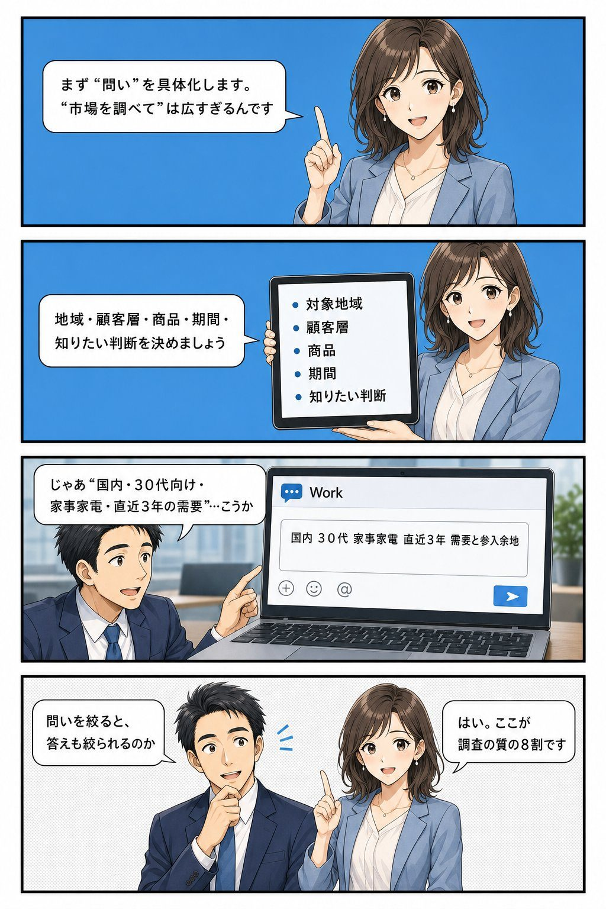
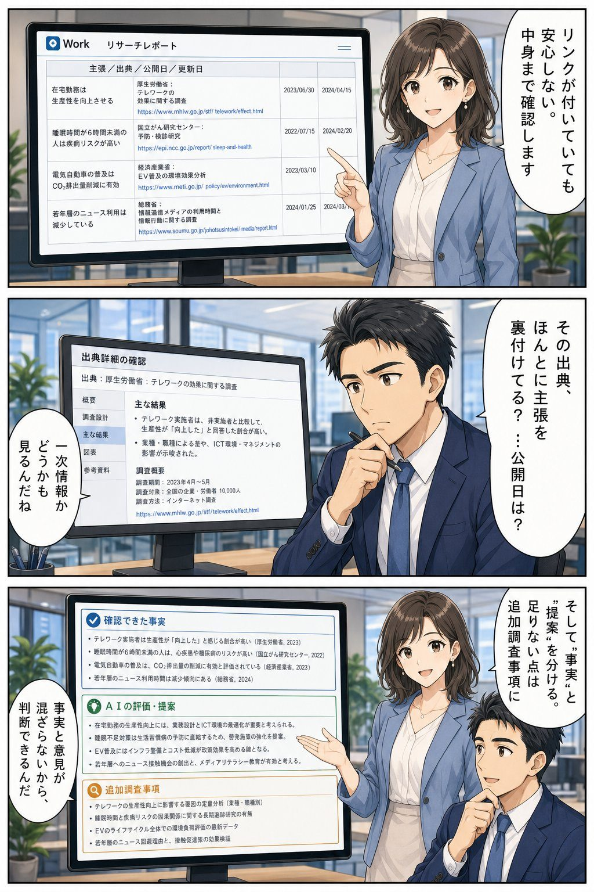
マンガから学ぶ、この章のテーマ
主人公は新規事業の市場を調べるよう頼まれます。
検索結果を集めるだけでは判断できません。
調査範囲、比較条件、情報の基準日、出典、報告形式を決め、 意思決定に使えるレポートへまとめます。
問いを具体化する
「市場を調べて」では広すぎます。
対象地域、顧客層、商品、期間、知りたい判断を具体化します。
情報の新しさを指定する
価格、法律、製品仕様、会社情報などは変化します。
基準日と、公式情報を優先することを伝えます。
出典を確認する
リンクがあるだけでは十分ではありません。
主張を実際に裏付けているか、公開日と更新日、一次情報かどうかを確認します。
事実と提案を分ける
調査で確認できた事実と、それをもとにしたAIの評価・提案を分けます。
判断材料が不足している場合は、不足事項を明示します。
そのまま使える指示文
実践チェック
- 調査の目的と範囲を決めた
- 情報の基準日を指定した
- 一次情報を優先した
- 出典が主張を裏付けている
- 事実と提案を分けた
第7章のまとめ
この章の実践ワーク
この章で学んだ内容を使い、自分の仕事から一つ選んでWorkへ依頼してください。完成後に、最初の指示、Workからの質問、修正内容、完成品、削減できた時間を記録しましょう。
09第8章 プラグインと外部サービスをつなげる
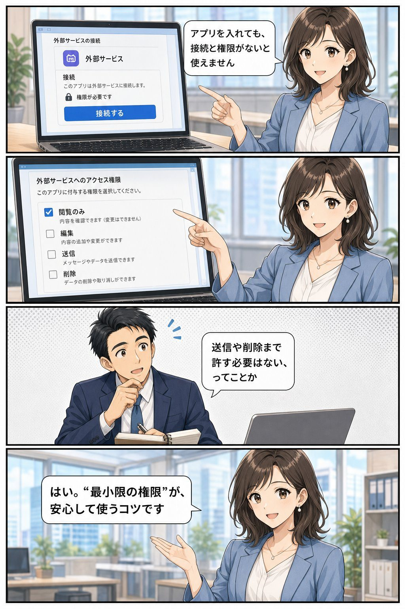
マンガから学ぶ、この章のテーマ
主人公は必要な資料を探すだけで時間を使っています。
案内役は、プラグインやアプリを使えば外部サービスの情報を探し、 成果物へつなげられる一方、アクセス権限を理解する必要があると説明します。
プラグインとアプリ
2026年7月9日以降、ワークフローを見つける中心はプラグインディレクトリになりました。
プラグインには、再利用可能な手順であるスキル、 外部サービスへ接続するアプリ、アプリのテンプレートなどが含まれる場合があります。
接続と許可は別
プラグインを入れても、外部アプリへの接続や必要な権限がなければ、 その機能は使えません。
会社の管理者が利用者、操作、承認条件を制限している場合もあります。
最小限の権限
必要な情報と操作だけを許可します。
閲覧だけで足りる仕事に、送信、編集、削除の権限を与える必要はありません。
実行前に相手と範囲を確認する
メール送信、予定作成、ファイル共有など、他人へ影響する操作では、相手、 内容、公開範囲を確認します。
そのまま使える指示文
実践チェック
- 接続するサービスを確認した
- 閲覧と変更の権限を区別した
- 使用するアカウントを確認した
- 外部へ影響する操作は承認前に確認した
- 不要になった接続を見直した
第8章のまとめ
この章の実践ワーク
この章で学んだ内容を使い、自分の仕事から一つ選んでWorkへ依頼してください。完成後に、最初の指示、Workからの質問、修正内容、完成品、削減できた時間を記録しましょう。
10第9章 自分専用のWebサイトや業務ツールを作る
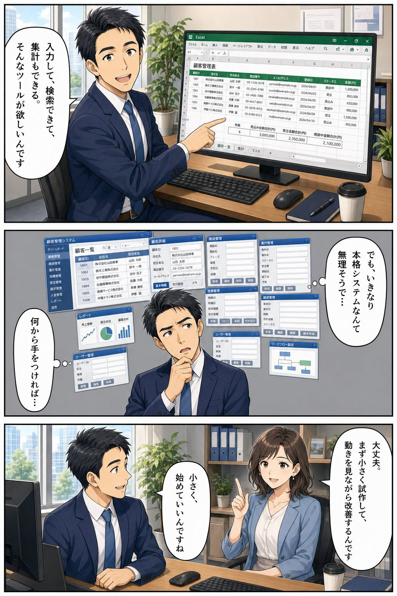
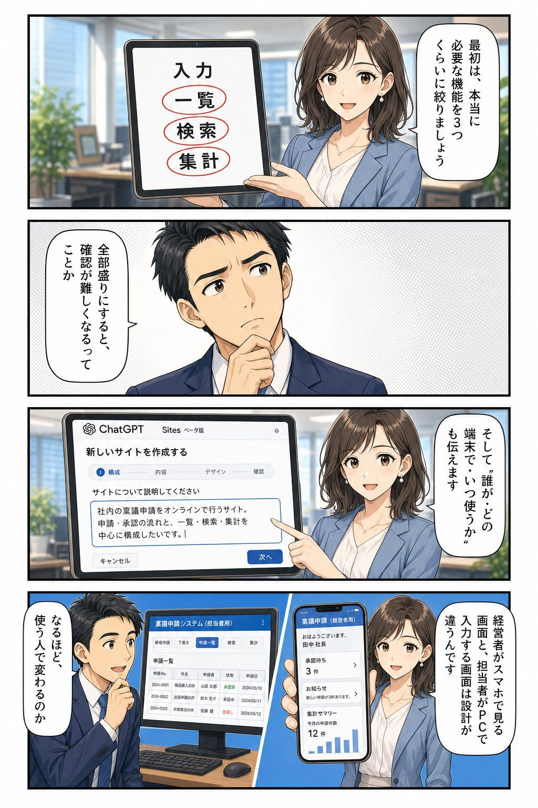
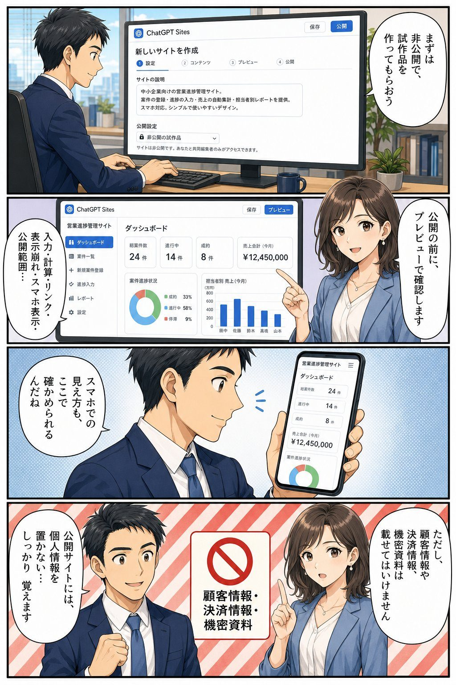
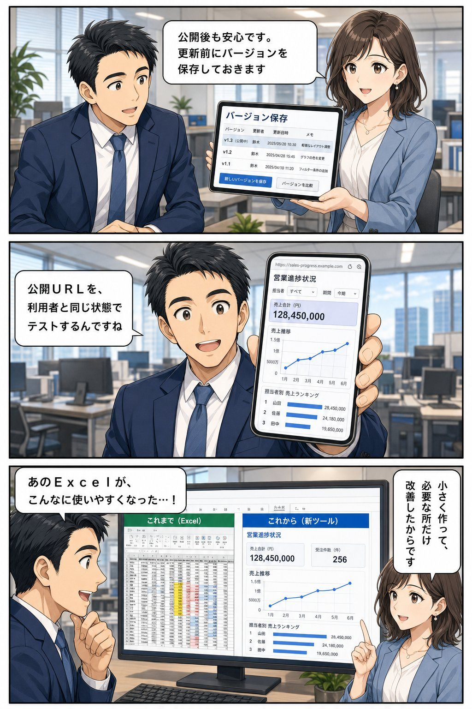
マンガから学ぶ、この章のテーマ
主人公はExcelで管理している営業進捗を、 入力・検索・集計のできるツールにしたいと考えます。
ChatGPT Sitesを使い、まず小さな試作品を作り、 動きを確認しながら改善します。
最初は機能を絞る
入力、一覧、検索、集計など、本当に必要な機能を3つ程度に絞ります。
最初から本格システムを目指すと、確認が難しくなります。
利用者と場面を伝える
誰が、どの端末で、いつ使うかを伝えます。
経営者がスマートフォンで確認する画面と、担当者がPCで入力する画面では設計が違います。
プレビューで確認する
公開前に、入力、計算、リンク、表示崩れ、スマートフォン表示、 公開範囲を確認します。
扱ってはいけない情報
公開サイトへ顧客情報、決済情報、機密資料を置かないようにします。
ChatGPT Sitesには利用上の制限があり、 本格的な基幹システムの代わりではありません。
公開後も確認する
更新前にバージョンを保存し、変更内容を確認してから公開します。
公開URLは実際の利用者と同じ状態でテストします。
そのまま使える指示文
実践チェック
- 利用者と利用端末を決めた
- 最初の機能を3つ程度に絞った
- 個人情報を除外した
- スマートフォン表示を確認した
- 公開範囲とURLを確認した
第9章のまとめ
この章の実践ワーク
この章で学んだ内容を使い、自分の仕事から一つ選んでWorkへ依頼してください。完成後に、最初の指示、Workからの質問、修正内容、完成品、削減できた時間を記録しましょう。
11第10章 毎日の仕事を、Workに続けてもらう
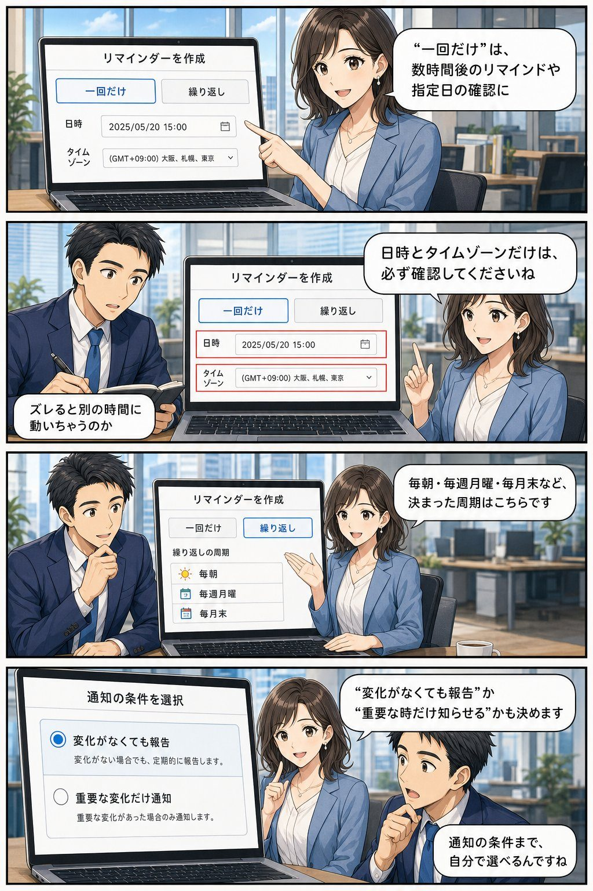
マンガから学ぶ、この章のテーマ
主人公は毎週、業界ニュースを調べて社内へ共有しています。
案内役はScheduled Tasksを使い、一回、定期、 条件監視という3種類の仕事に分けます。
一回だけ実行する
数時間後のリマインドや、指定日の確認など、一度だけ行う仕事です。
日時とタイムゾーンを確認します。
繰り返し実行する
毎朝、毎週月曜日、毎月末など、決まった周期で行う仕事です。
何も変化がなくても報告するのか、重要な変化だけ知らせるのかを決めます。
条件を監視する
価格、ニュース、天気、空席など、条件が成立したときだけ知らせてもらいます。
確認頻度と通知条件を具体的にします。
外部サービスの接続
定期タスクでメールやカレンダーなどを使う場合は、 作成時点で接続と権限が利用できるか確認します。
定期的に整理する
不要になったタスクを止め、重複、通知過多、古い条件がないか見直します。
そのまま使える指示文
実践チェック
- 一回・繰り返し・条件監視を選んだ
- 日時とタイムゾーンを確認した
- 通知条件を具体的にした
- 必要な外部サービスを接続した
- 不要なタスクを停止した
第10章のまとめ
この章の実践ワーク
この章で学んだ内容を使い、自分の仕事から一つ選んでWorkへ依頼してください。完成後に、最初の指示、Workからの質問、修正内容、完成品、削減できた時間を記録しましょう。
12第11章 AIの間違いと情報漏えいから会社を守る
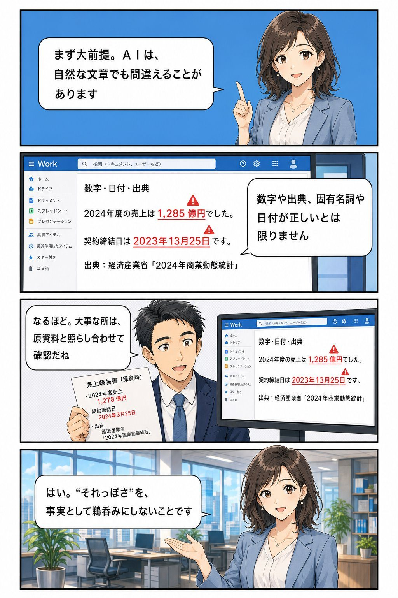
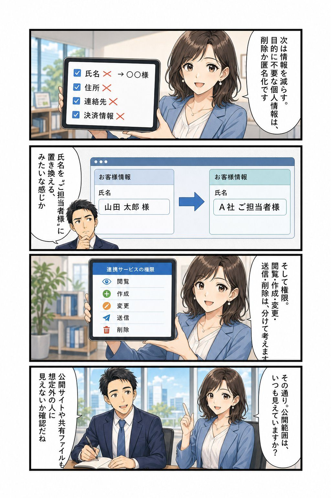
マンガから学ぶ、この章のテーマ
Workの便利さを知った主人公は、顧客名簿をそのまま渡そうとします。
案内役は、成果物を作れる範囲が広がるほど、情報、権限、 外部への影響を確認する必要があると止めます。
AIは間違える
自然な文章でも、数字、出典、固有名詞、日付が正しいとは限りません。
重要な内容は原資料と照合します。
入力する情報を減らす
氏名、住所、連絡先、健康情報、決済情報など、 目的に不要な情報は削除または匿名化します。
権限と公開範囲
接続サービスでは、閲覧、作成、変更、送信、削除を区別します。
公開サイトや共有ファイルは、想定する相手以外から見えないか確認します。
重要な操作を承認する
送信、公開、購入、削除など、外部へ影響し、取り消しにくい操作は、 対象と内容を確認してから承認します。
専門家の判断
税務、法務、医療、投資、労務などは、AIの回答だけで最終判断せず、 必要に応じて専門家へ確認します。
そのまま使える指示文
実践チェック
- 不要な個人情報を削除した
- 資料を提供する権限がある
- 数字と出典を原資料で確認した
- 公開・送信・削除前に対象を確認した
- 専門家確認が必要か判断した
第11章のまとめ
この章の実践ワーク
この章で学んだ内容を使い、自分の仕事から一つ選んでWorkへ依頼してください。完成後に、最初の指示、Workからの質問、修正内容、完成品、削減できた時間を記録しましょう。
13第12章 AIに作業を任せ、人間は判断する
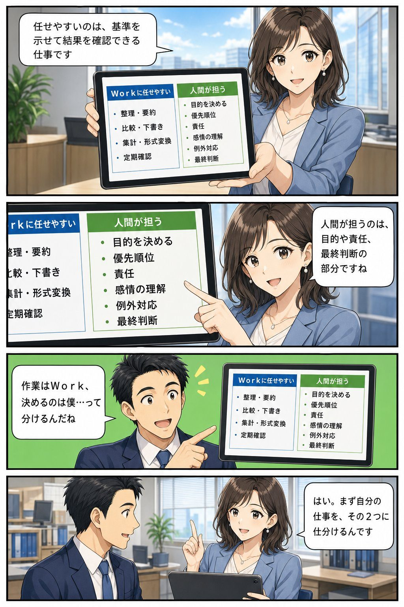
マンガから学ぶ、この章のテーマ
主人公は資料作成の時間を減らし、部下との面談や顧客への提案へ時間を使えるようになります。
最後に、自分の仕事をAIへ任せる部分と、人間が担う部分に分けます。
AIに任せやすい仕事
整理、要約、比較、下書き、集計、形式変換、定期確認など、 基準を示しやすく結果を確認できる仕事です。
人間が担う仕事
目的を決める、優先順位を付ける、責任を負う、相手の感情を理解する、 例外に対応する、最終判断をする仕事です。
仕事の流れをテンプレート化する
繰り返す仕事は、使用資料、手順、完成形式、確認項目をテンプレートにします。
毎回一から説明する必要が減ります。
完全自動化を目指さない
人間の確認を入れた方が安全で速い仕事もあります。
自動化率ではなく、成果、時間、品質、リスクのバランスを見ます。
最初の一週間
毎日一つ、小さな仕事をWorkへ任せます。
結果、修正内容、削減できた時間を記録し、自分に合う使い方を見つけます。
そのまま使える指示文
実践チェック
- 自分の仕事を4分類した
- 最初に任せる小さな仕事を決めた
- 確認基準を作った
- 繰り返す仕事をテンプレート化した
- 削減時間と品質を振り返った
第12章のまとめ
この章の実践ワーク
この章で学んだ内容を使い、自分の仕事から一つ選んでWorkへ依頼してください。完成後に、最初の指示、Workからの質問、修正内容、完成品、削減できた時間を記録しましょう。
14エピローグ 質問する人から、仕事を生み出す人へ
主人公は、資料を作るために残業する時間が減り、 部下との面談や顧客への提案に時間を使えるようになりました。
ある日、部下から「ChatGPTって、何に使えばいいんですか」 と聞かれます。
ChatGPT Workを使う目的は、人間が考えなくなることではありません。
作業をAIへ任せ、人間が目的、確認、判断、責任へ集中することです。
あなたが今日、ChatGPT Workへ任せる最初の仕事は何でしょうか。
15巻末付録 コピーして使える実践テンプレート集
この付録は、必要な部分を書き換え、そのままChatGPT Workへ貼り付けて使えるように作成しています。 最初からすべてを埋める必要はありません。分からない項目は、 Workへ質問してもらうこともできます。
付録1 基本依頼テンプレート
付録2 報告書・提案書・マニュアル
付録3 Excel・CSVデータ分析
付録4 プレゼン資料
付録5 調査・比較・情報収集
付録6 Webサイト・業務ツール
付録7 定期タスク・情報監視
付録8 期待と違ったときの修正指示集
付録9 完成品の品質確認チェックリスト
付録10 個人情報・機密情報チェック
付録11 Chat・Work・Codex使い分け早見表
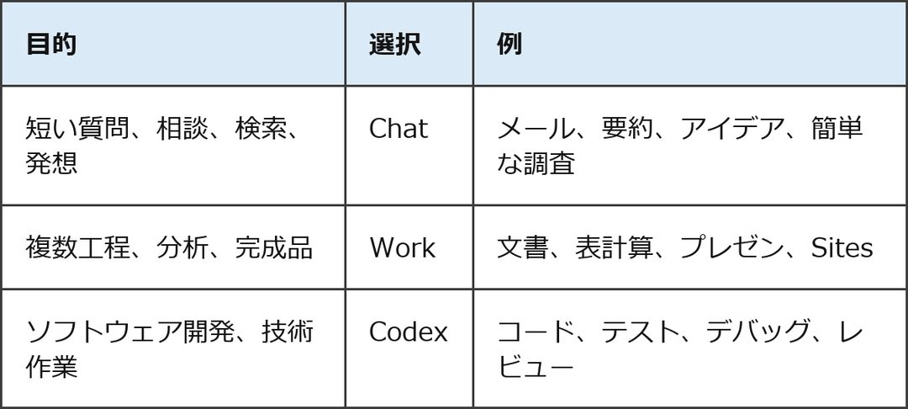
付録12 仕事の棚卸しシート
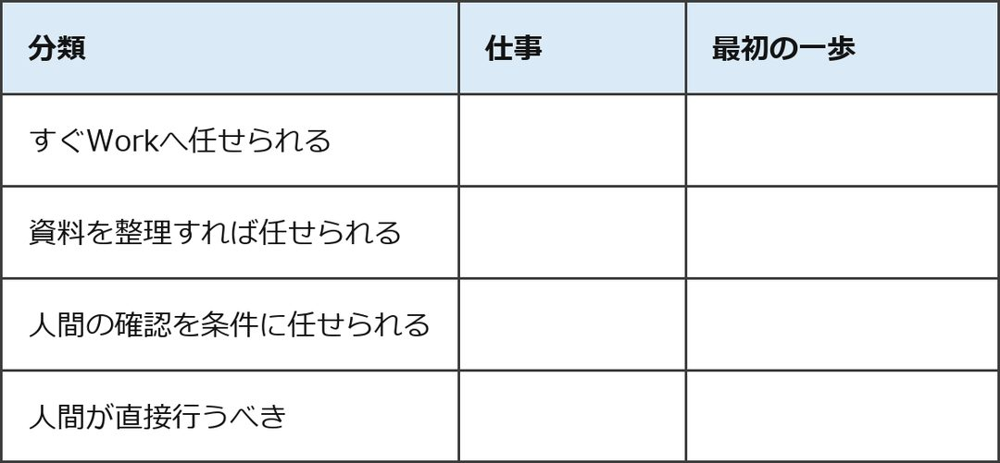
7日間実践プラン
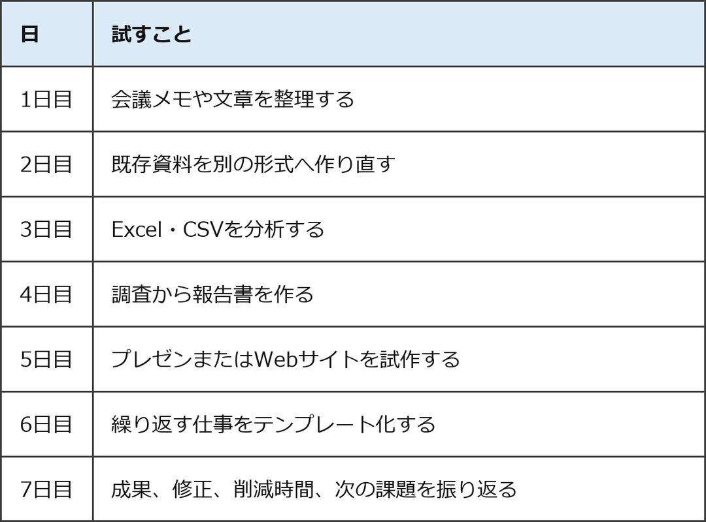
16主な公式情報源
- ChatGPT Work and Codex https://help.openai.com/en/articles/20001275-chatgpt-work-and-codex
- ChatGPT Release Notes https://help.openai.com/en/articles/6825453-chatgpt-release-notes
- Creating and editing documents, spreadsheets, and presentations with ChatGPT Work https://help.openai.com/en/articles/20001278-creating-and-editing-documents-spreadsheets-and-presentations-with-chatgpt-work
- Creating and managing ChatGPT Sites https://help.openai.com/en/articles/20001339-creating-and-managing-chatgpt-sites
- Apps in ChatGPT https://help.openai.com/en/articles/11487775-connectors-in-chatgpt
- File storage and Library in ChatGPT https://help.openai.com/en/articles/20001052-file-storage-and-library-in-chatgpt
- Admin controls, security, and compliance for plugins and apps https://help.openai.com/en/articles/11509118-admin-controls-security-and-compliance-for-plugins-and-apps
※本書はOpenAIの公式出版物ではありません。機能、画面、名称、プラン、 提供条件は変更される場合があります。利用時には公式情報と実際の画面をご確認ください。
◀ 他の書籍を見る© 竹谷知悦 / 特別プレゼント版